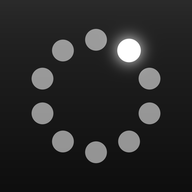
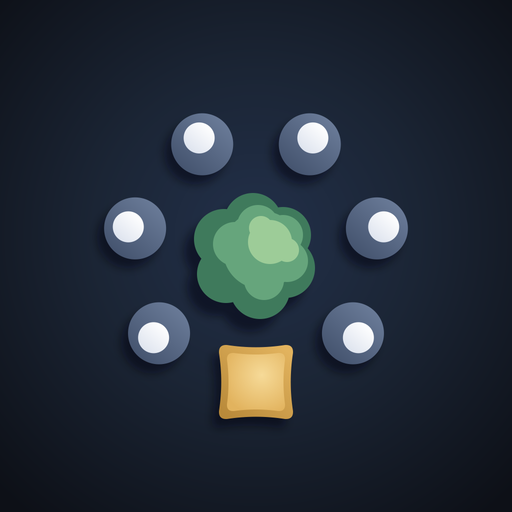

وتواصوا
وتواصوا الجديدجولة تجريبية لرأيي بصراحة، وللإضافات القوية اللي أقترحها، واللي هنشيله، وشكل التطبيق بعدها.
دي معاينة بس. مفيش حاجة منها اتغيّرت في التطبيق لسه.
الفكرة نفسها حقيقية ومفيدة: ناس قليلين يعرفوا بعض يلتزموا بعبادة ٣٠ يوم، وشجرة بتكبر بالتزامهم كلهم. ده بيحلّ مشكلة حقيقية. أغلب الناس بتبدأ وبتقطع، والصحبة هي أقوى حاجة بتثبّت. والشكل نفسه مميّز ومحدّش عامل زيه.
الخلاصة: هيبقى مفيد فعلًا لشريحة واضحة: عيلة، وأصحاب، وحلقة مسجد، وبنات بيحفظوا مع بعض. مش هينفع كمكان تقابل فيه غرباء. وعشان كده الإضافات اللي جاية كلها بتخدم حاجة واحدة: إن الحلقة تكمّل لحد يوم ٣٠.
أول ما تفتح التطبيق، أو تضغط على الإشعار، تلاقي حلقاتك وجنب كل واحدة زرار «تم». مفيش دخول في الحلقة ولا تبويبات. تسجيل اليوم ياخد ثانيتين، أسرع من رسالة واتساب.
ليه قوية: كل ضغطة زيادة بتخسّرك ناس. العادة بتتبني لما الفعل يكون أسهل حاجة ممكنة. والإشعار نفسه بيقولك إن الغصن مستنيك إنت، ودي مسؤولية قدام الحلقة، مش مجرد تذكير.
أكتر لحظة الناس بتقطع فيها هي لما يفوتهم يوم: «خلاص باظت». الحل نوعين من الأيام: يوم عذر (سفر، مرض، أو عذر شرعي للبنات)، ما بيتحسبش عليك وسببه مش بيظهر لحد. وقضاء، تعوّض فيه اليوم اللي فاتك خلال ٤٨ ساعة.
لسه قدامك ٣١ ساعة تقضيه، والغصن هيكمل كأنه ما فاتش.
ليه قوية: مفيش تطبيق التزام بيراعي إن البنات عندهم أيام عذر شرعي كل شهر. من غير الميزة دي، حلقات البنات هتبان فاشلة ظلم. وده بيطابق روح الدين: «إذا مرض العبد أو سافر كُتب له مثل ما كان يعمل مقيمًا صحيحًا».
جنب كل عضو زرار «ادعُ له». بتدعي له بينك وبين ربنا، وتضغط. يوصله إشعار هادي: «أحد إخوتك في الحلقة دعا لك الآن». ما بيعرفش مين، ومفيش عدّاد ولا ترتيب.
ليه قوية: بتربط الحلقة ببعض من غير زحمة شات، ومن غير رياء لأن مفيش اسم ولا رقم. وهي سبب حلو إن الواحد يفتح التطبيق حتى لو خلّص ورده. ومفيش تطبيق تاني فيها.
بدل ما تكتب الهدف من الصفر، تختار من نماذج جاهزة. وكل عضو يكتب نيته في سطر أول يوم. السطر ده مش بيشوفه غيره، وبيرجع يظهر له يوم ٣٠.
«أختم قبل رمضان، وأهدي ثوابها لأمي.»
كمّلت ٢٨ من ٣٠ يوم. تقبّل الله.ليه قوية: صفحة فاضية بتوقّف الناس، والنماذج بتخلّي القائد يبدأ في ثواني. وكتابة النية أول يوم ورجوعها يوم ٣٠ بتدّي الإنجاز معنى، وتقفل الـ٣٠ يوم بلحظة مؤثرة الناس هتحب تشاركها.
«تُغرس سدرة حقيقية في الدوحة» أقوى وعد في التطبيق، وأخطر وعد. لو اتحقق، الحلقة تستلم صورة شجرتها ومكانها وتاريخ غرسها، وده هيبقى أقوى إعلان للتطبيق. لو مااتحققش، هيبقى أكبر نقطة ضعف فيه.
المطلوب منك: شريك غرس، زي جهة تشجير أو بلدية أو مشتل في قطر، بتكلفة ثابتة للشجرة. الكود سهل وأعمله في يوم. الصعب هو الاتفاق. ولحد ما يتعمل، أقترح نكتب «نسعى لغرس سدرة» بدل «تُغرس» عشان الوعد يفضل صادق.
كل ميزة مالهاش لازمة بتزوّد التحميل، وبتشتّت المستخدم الجديد، وبتزوّد صيانتك إنت. دي اللي شايف إنها لازم تمشي أو تتدمج:
تطبيق اسمه «وتواصوا بالحق» مينفعش يبدأ بنشاط مش حقيقي. البوتات كمان مخبّية عننا أهم معلومة: هل الناس الحقيقيين بيكمّلوا؟ نقفلها قبل أول تجربة حقيقية، ونشيل شريط «العالم» اللي بيعتمد عليها.
ترتيب الحلقات والأفراد قدام الكل في العبادة بيفتح باب رياء، وبيحبط اللي في آخر الترتيب. بداله: «إنت النهارده أحسن من الشهر اللي فات» على مستواك إنت، والمنافسة تفضل جوه الحلقة على الشجرة.
اللي فيه بيتكرّر في صفحة الحلقة والإشعارات. يتدمج في «اليوم».
عدد الرسائل والتشجيعات ومتوسطات كتير محدّش بيقراها. نخلّيها كارت واحد بسيط فيه أيامك، وختماتك، وأحسن وقت ليك.
فكرة حلوة، بس عاملة شاشة وقواعد زيادة. تبقى نموذج من نماذج الحلقة (الصمت، السخاء، غض البصر).
بتتفتح نادرًا. تدخل جوه «ملفي». كده الشريط يبقى ٤ أماكن بس.
هيفضل زي ما هو: الشجرة، والرفيق، والختمة الشخصية، وخريطة الحفظ، وكروت الستوري، والبستان. البستان بيتحمّل بس لما تفتحه، فمش مثقّل على التطبيق.
حلقاتك بزرار «تم»، وحالة رفيقك، والقضاء لو فاتك يوم. ٩٠٪ من الاستخدام هنا.
حلقات عامة تنضم لها، وكروت تعرّفك بالفكرة. من غير ترتيب ولا سباق.
السدرات اللي اتغرست بإثباتها. مكان فخر الحلقات.
خريطة الحفظ، وكارت إحصائيات واحد، وسدراتك، والإعدادات.
قولّي «نفّذ» وأبدأ بالخطوة ١ و٢، أو اختار من الجولة اللي يعجبك وأشيل اللي مش عاجبك.